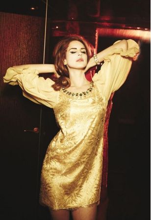

Musical Style
Del Rey has been labeled an "alt-pop"[209] or alternative pop artist.[210] Her works have been variously categorized as pop,[211] rock,[212] dream pop,[213] baroque pop,[214] indie pop, psychedelic rock,[215] while incorporating trip hop,[216] hip hop,[217] lo-fi,[218] and trap elements.[219] Upon her debut release, Del Rey's music was described as "Hollywood sadcore" by some music critics.[220] It has been repeatedly noted for its cinematic sound and its references to various aspects of pop culture; both critics and Del Rey herself have noted a persistent theme of 1950s and 1960s Americana.[221] The strong elements of American nostalgia brought Idolator to classify her firmly as alternative pop.[222] Del Rey elaborated on her connection to the past in an interview with Artistdirect, saying "I wasn't even born in the '50s but I feel like I was there."[223]
Of Born to Die, AllMusic stated that its "sultry, overstated orchestral pop recast her as some sort of vaguely imagined chanteuse for a generation raised on Adderall and the Internet, with heavy doses of Twin Peaks atmosphere".[224] Del Rey's subsequent releases would introduce variant styles, particularly Ultraviolence, which employed a guitar-based sound akin to psychedelic and desert rock.[225] Kenneth Partridge of Billboard noted this shift in style, writing: "She sings about drugs, cars, money, and the bad boys she's always falling for, and while there remains a sepia-toned mid-century flavor to many of these songs, [Del Rey] is no longer fronting like a thugged-out Bette Davis."[226] Upon the release of Honeymoon, one reviewer characterized Del Rey's body of work as being "about music as a time warp, with her languorous croons over molasses-like arrangements meant to make clock hands seem to move so slowly that it feels possible, at times, they might go backwards".[227]
Prior to coming to prominence under the stage name Lana Del Rey, she performed under the names Lizzy Grant, Lana Rey Del Mar,[228] Sparkle Jump Rope Queen,[229] and May Jailer.[230] Under the stage name Lizzy Grant, she referred to her music as "Hawaiian glam metal",[231] while the work of her May Jailer project was acoustic.[232]